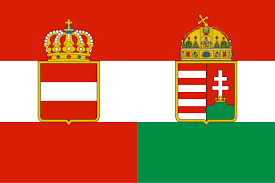
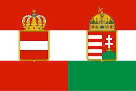
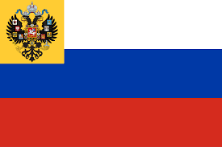
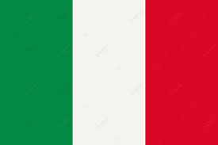
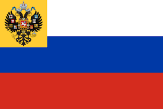
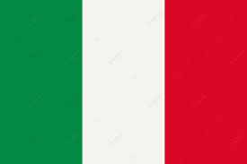
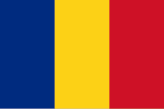
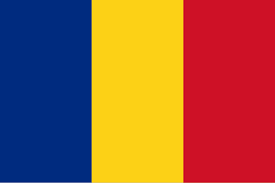
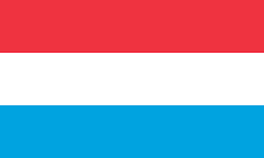
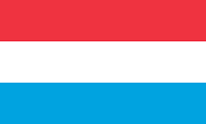

LA GRAN GUERRA
La Primera Guerra Mundial, también conocida como la Gran Guerra, fue un conflicto internacional que se desarrolló entre 1914 y 1918, involucrando a potencias de diferentes continentes y marcando el primer gran conflicto del siglo XX. Esta guerra
quedo dividida en 2 bandos, los cuales fueron las potencias Centrales y las potencias de Entente y cada bando tuvo maquinaria distinta en el desalloro de la guerra.
Las potencias centrales
Las potencias centrales estaban conformadas por Alemania, Austria-Hungría, Imperio otomano, Bulgaria y Turquía.
Durante la primera guerra mundial las potencias centrales contaban con una limitada variedad de armas de artillería, pero esto no quiere decir que no las poseian, entre las más destacadas tenemos:
Los cañones: las cuales eran armas con un cañón largo que disparaban casi directamente al objetivo.
Los Obuses: las cuales eran armas con un cañón más corto que disparaban sus proyectiles en una trayectoria curva.
Ametralladoras: Las ametralladoras fueron la sensación de ese momento por su capacidad de daño.
Gases toxicos: Los cuales fueron muy famosos y por lo general eran el cloro, el fosgeno y el gas mostaza.
Las potencias de la Entente
Las potencias de la Entente estaban conformadas por Gran Bretaña, Francia, Rusia Imperial, Italia, Grecia, Portugal, Rumania, Estados Unidos, Japón y Serbia.
Durante la primera guerra mundial las potencias de la entente contaban con una limitada variedad de armas de artillería al igual que su enemigo, pero esto no quiere decir que no las poseian, la artilleria era la misma con sus
adbbersarios, entre las más destacadas tenemos:
Los cañones: las cuales eran armas con un cañón largo que disparaban casi directamente al objetivo.
Los Obuses: las cuales eran armas con un cañón más corto que disparaban sus proyectiles en una trayectoria curva.
Gases toxicos: Los cuales fueron muy famosos y por lo general eran el cloro, el fosgeno y el gas mostaza.
Proyectiles y Munisiones: A diferencia de las potencias centrales, la potencia de entente en esta area contaba con mejor armamento.
LA SEGUNDA GUERRA MUNDIAL
La Segunda Guerra Mundial fue un conflicto global que se desarrolló entre 1939 y 1945, marcado por la invasión alemana de Polonia y la posterior expansión del conflicto a nivel mundial, resultando en el mayor número de muertes en la historia.
Esta guerra quedo dividida en 2 bandos, los cuales fueron los aliados y
las potencias del eje y cada bando tuvo maquinaria distinta en el desalloro de la guerra.
Los Aliados
Los Aliados estaban conformadas por Francia, Reino Unido, Estados Unidos, Unión Soviética, China, Polonia, Noruega, Dinamarca, Bélgica y Luxemburgo.
Durante la segunda guerra mundial las aliados contaban con una grande y extensa variedad de armas de artillería, esto dependia mucho del pais en elque pelearan y es de resaltar que a fuerza de artilleria era meno que la de sus
enemigos, ya que las potencias del eje poseian más avanzadas fuerzas en artilleria y este fue uno de los factores por los cuales se le dificulto a los aliados derrocar el regimen Nazi, entre las más destacadas de la fuerza de los aliados tenemos:
El Subfusil PPSh-41: Diseñado por la Unión Soviética, este subfusil revolucionó el campo de batalla.
M1 Garand y la Thompson: Armas icónicas y efectivas utilizadas por los estadounidenses.
El Bazooka: Un lanzacohetes sin retroceso desarrollado por Estados Unidos para ser utilizado por la infantería contra los tanques.
El cóctel Molotov: esta es una versión del origen del nombre de este arma, otra es que los propios soviéticos se lo pusieron cuando Molotov ordenó producir estos artefactos en masa.
Las potencias del Eje
La potencias del Eje estaba conformada por Alemania nazi, Italia fascista, Japón imperial, Bulgaria, Hungría, Rumania, Finlandia, Tailandia, Eslovaquia y Serbia.
Durante la segunda guerra mundial la potencia del eje contaban con una grande y extensa variedad de armas de artillería, durante el proceso y desemblvimient de la guerra se fueron creando grandes avances armamentisticos de parte
de Alemania, lo cual en cierta manera beneficiaba a sus ejercitos y sus aliados, llego a tal punto de que los aliados declararon tener menor fuerza de artilleria que los enemigos a los que estaban enfrentando, entre las más destacadas de la
fuerza del eje tenemos:
La ametralladora MG42: fue diseñada para ser un reemplazo de la MG 34, y su capacidad de disparar a una velocidad de hasta 1,200 disparos por minuto la convirtió en una de las ametralladoras más mortales de su tiempo.
La MP40: El subfusil automático básico del ejército alemán. Era idóneo para las operaciones de asalto de la 'guerra relámpago' y los combates a corta distancia en las ciudades por su potencia de tiro, aunque su peso, unos cinco
kilos, y su escaso alcance fueron sus grandes problemas.
El Krummlauf: un cañón curvo para el fusil de asalto alemán Sturmgewehr 44.
El panzerfaust: un lanzacohete sin retroceso inventado por Alemania.
 



 




 



 
